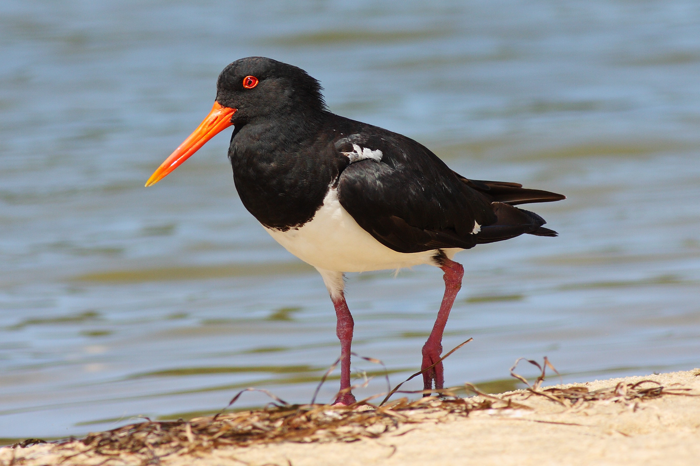

An adult walking along a coastline in Victoria – note the characteristic
orange-red beak
The pied oystercatcher (Haematopus longirostris) is a species of oystercatcher. It is a wading bird
native to Australia and commonly found on its coastline. The similar South Island pied oystercatcher (H.
finschi) occurs in New Zealand.
(Pied oystercatcher, accessed 2019-03-26).
Oystercatcher Observations in Tasmania - eBird checklists for 1902 through 2019
'eBird'. 2012. eBird: An online database of bird distribution and abundance [web application]. eBird, Ithaca, New York. Available: http://www.ebird.org. (Accessed: Date [e.g., February 2, 2012]).